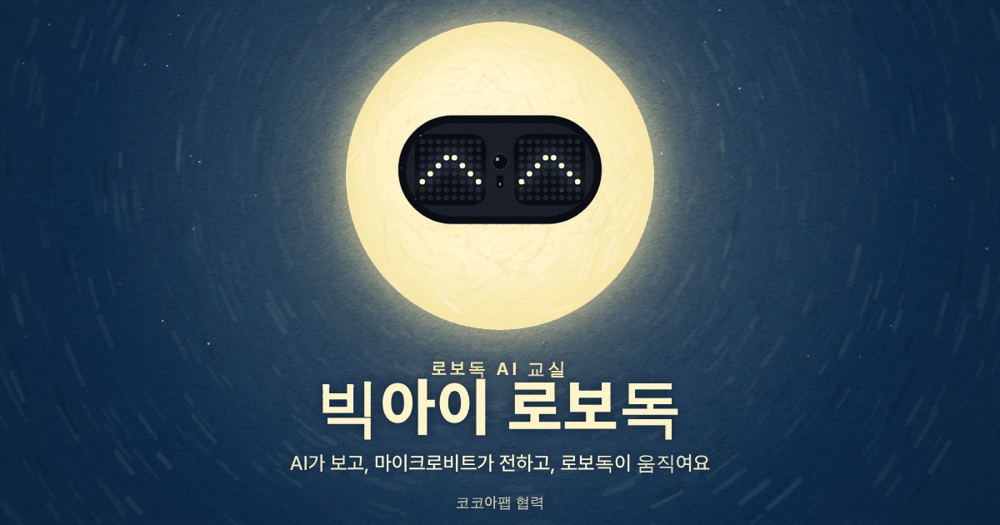
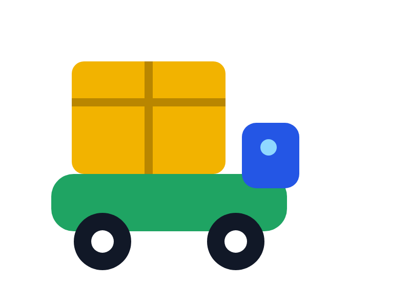
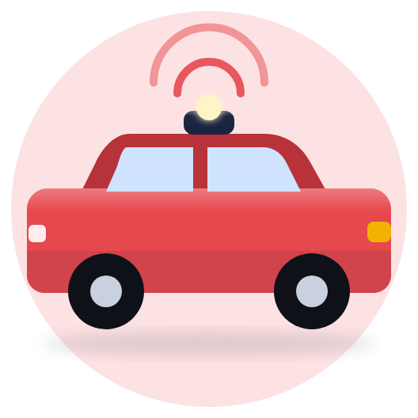

내가 가르친 AI로 로봇을 움직여요
웹캠으로 카드·물건을 AI에게 가르치고, 인식한 번호를 마이크로비트가 라디오로 전해 로봇이 움직입니다. 수업에 쓰는 교구를 골라 시작하세요.
- ① 문제 찾기
- ② AI 가르치기
- ③ 마이크로비트로 전달
- ④ 로봇 움직이기
- ⑤ 안전 점검


준비 중
마퀸(micro:Maqueen)
DFRobot
두 바퀴 소형 자동차 로봇. 같은 AI 브리지로 수업할 수 있도록 준비하고 있어요
자료가 준비되면 이곳에 열려요.